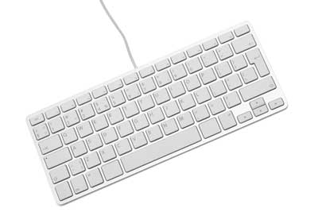
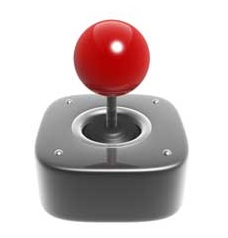
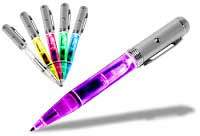
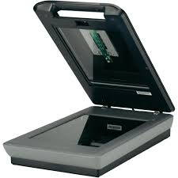

Computers Knowledge
Grow your skills


Input Devices
In computing, an input device is a piece of equipment used to provide data and control signals to an information processing system such as a computer or information appliance. Examples of input devices include keyboards, mouse, scanners, digital cameras, joysticks, and microphones.
Keyboard
Mouse
Joy Stick
Light Pen
Scanner
Keyboard

The keyboard is a basic input device that is used to enter data into a computer or any other electronic device by pressing keys. It has different sets of keys for letters, numbers, characters, and functions. Keyboards are connected to a computer through USB or a Bluetooth device for wireless communication.
Mouse

The mouse is a hand-held input device which is used to move cursor or pointer across the screen. It is designed to be used on a flat surface and generally has left and right button and a scroll wheel between them. Laptop computers come with a touchpad that works as a mouse. It lets you control the movement of cursor or pointer by moving your finger over the touchpad. Some mouse comes with integrated features such as extra buttons to perform different buttons.
The mouse was invented by Douglas C. Engelbart in 1963. Early mouse had a roller ball integrated as a movement sensor underneath the device. Modern mouse devices come with optical technology that controls cursor movements by a visible or invisible light beam. A mouse is connected to a computer through different ports depending on the type of computer and type of a mouse.
Joy Stick

A joystick is also a pointing input device like a mouse. It is made up of a stick with a spherical base. The base is fitted in a socket that allows free movement of the stick. The movement of stick controls the cursor or pointer on the screen.
The frist joystick was invented by C. B. Mirick at the U.S. Naval Research Laboratory. A joystick can be of different types such as displacement joysticks, finger-operated joysticks, hand operated, isometric joystick, and more. In joystick, the cursor keeps moving in the direction of the joystick unless it is upright, whereas, in mouse, the cursor moves only when the mouse moves.
Light Pen

A light pen is a computer input device that looks like a pen. The tip of the light pen contains a light-sensitive detector that enables the user to point to or select objects on the display screen. Its light sensitive tip detects the object location and sends the corresponding signals to the CPU. It is not compatible with LCD screens, so it is not in use today. It also helps you draw on the screen if needed. The first light pen was invented around 1955 as a part of the Whirlwind project at the Massachusetts Institute of Technology (MIT).
Scanner

The scanner uses the pictures and pages of text as input. It scans the picture or a document. The scanned picture or document then converted into a digital format or file and is displayed on the screen as an output. It uses optical character recognition techniques to convert images into digital ones.It has a glass pane and a moving optical CIS or CCD array. The light illuminates the pane, and then the image is placed on the glass pane. The light moves across the glass pane and scans the document and thus produces its digital copy. You will need a transparency adapter while scanning transparent slides.